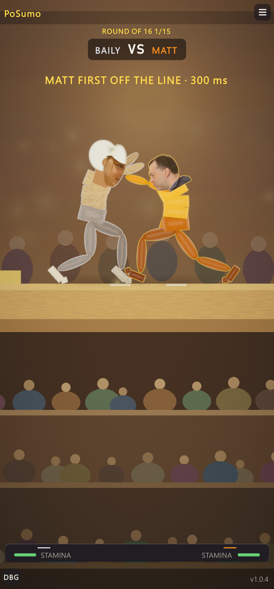
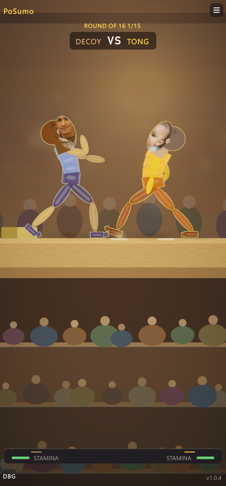
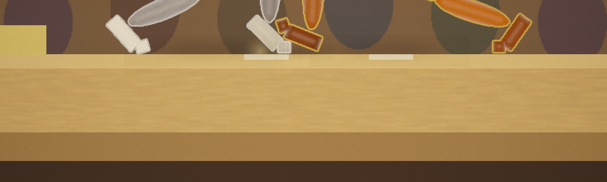
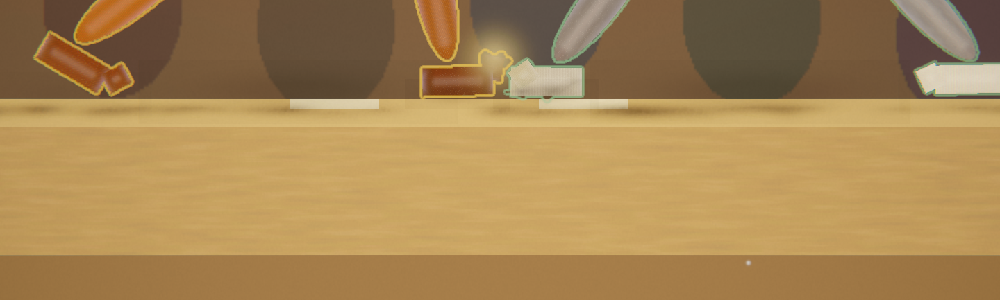

GFX / audio / physics-audit pass
PoSumo · 2026-11-10 · 1440×3088 portrait Game view · no brain touched (no observation, action, mass, collider or rule changed)
Verdict
- Bracket harness PASS with every new feature on: 15 bouts, 16 fighters, champion Kim, 474 s.
- Console: zero project errors; only the known IvanMurzak relay-authorisation error.
- Compiles clean in the Editor and through Unity's Roslyn standalone.
1 · Desktop visual tier
Stronger bloom with high-quality filtering, a small permanent lens-edge chromatic dispersion (Systems_PostFx now adds its slow-mo / KO punches on top of it), finer film grain, and particle bursts doubled. Disabled on mobile — the Android look is unchanged.


2 · Clay wear
Scuff streaks where a loaded foot slides (same signal the scrape audio hears) and dents where a body lands. Persist across a tournament, cleared with NEW TOURNAMENT. The first sizing hit the 700-mark cap inside 13 bouts and read as a hairline; resized to reach over the mat's front lip: 66 marks after 4 bouts.


3 · Synthesised impacts
Modal synthesis: loudness from collision energy ½·μ·vn² (reduced mass, normal closing speed), brightness from contact stiffness (shorter force pulse on harder hits), timbre from the material pair, pitch from the struck part's mass. A 48-clip bank is rendered once per session. Same gates and cooldowns as the samples it replaces. Samples below: one variant per energy bucket E0 (light) → E3 (slam).
Friction: the scrape loop already scaled with slide speed × foot load. It now also gets its own low-pass per fighter (700 Hz slow drag → 7 kHz fast slide) and stick-slip chatter on the audio thread (9–38 bursts/s, deepest on a slow, heavily loaded drag).
4 · Physics audit (15 bouts, 18 307 live steps)
| Lane | Pair samples | > 5 mm | > 2 cm | Max | Worst pair |
|---|---|---|---|---|---|
| Fighter vs fighter | 5 290 723 | 0.23 % | 3 | 36.6 mm | toe / toe |
| Fighter vs arena | 2 489 752 | 2.73 % | 13 | 33.4 mm | foot / dohyo platform |
| Self (30 leg-vs-trunk pairs) | 1 098 420 | 3.46 % | 35 359 | 102 mm | near thigh / chest, lower back |
Fighter-to-fighter and fighter-to-arena contact is effectively clean: 16 visible overlaps in 7.8 M samples, all toes and feet. Continuous collision is already on every part. The fastest part moves up to 2.9× the thinnest collider (6 cm) per step, yet no tunnelling shows up as visible overlap. Physics2D.Simulate averages 0.15 ms per step.
The one real defect: the near thigh sinks up to 10 cm into the chest and lower back.
The count is almost identical from bout to bout (≈2 400 deep overlaps each), which points to the crouched start pose, not to fighting. A crouch past the hip range drives the near thigh through the trunk, and the solver then pushes it out. Fixing it changes the pose the brains start every bout from, so it would mean retraining. Recorded, not changed.
Not done
| Asked for | Why not |
|---|---|
| Unreal shaders and lighting | This is a Unity project |
| SSGI/RTX, SSR, contact shadows, refraction | Nothing to sample in the URP 2D renderer: sprites write no depth, and the floor is seen edge-on |
| HRTF and geometric reverb | 2D panning is deliberate with a zooming orthographic camera |
| Blender LOD/bake pipeline | There are no meshes |
| Mass and collider changes | Would invalidate every brain. The audit shows the contacts don't need them |